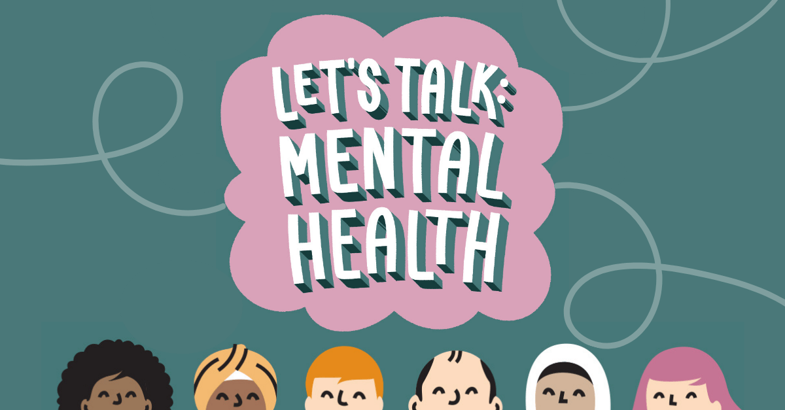

Small, Regular Actions
Short walks, gentle stretching and simple routines can help rebuild energy and structure.
Recognising symptoms and finding supportive steps forward.
Depression is a common mental health condition that affects mood, thoughts and daily life. It’s more than feeling sad for a few days. With the right support and self-care, many people find effective ways to recover and manage symptoms.
Short walks, gentle stretching and simple routines can help rebuild energy and structure.
Jotting down mood, sleep and small wins can make patterns visible and encourage progress.
Talking with someone you trust or joining a support group can reduce isolation and offer perspective.
If low mood persists or worsens, consider professional help. Your GP can discuss options such as talking therapies. If you’re in immediate crisis or thinking of harming yourself, seek urgent help via local emergency services.